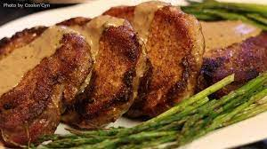

Creamy Herbed Pork Chops

Description
This recipe offers a delicious main dish for anyone to try. Pan-fried pork chops covered in a nice herbed cream to bring out the flavor, an absolute must try!
Ingredients
- 4 thick-cut pork chops
- 1 teaspoon Montreal steak seasoning, or as desired
- 1/2 cup of butter, divided
- 2 1/2 tablespoons of all-purpose flour, or as needed
- 1 tablespoon dried basil
- 1 teaspoon instant beef bouillon granules
- 1 teaspoon of freshly ground black pepper
- 2 cups of milk
Steps
- Season pork chops on all sides with Montreal steak seasoning.
- Melt 2 tablespoons butter in a large skillet over medium heat. Cook chops in melted butter until browned and slightly pink in the center, about 7 to 10 minutes per side. An instant-read thermometer inserted into the center should read at least 145 degrees F (63 degrees C). Add remaining butter to the pan as needed so that about 3 tablespoons pan drippings remain in the pan when the chops are finished cooking. Transfer pork chops to a plate and return skillet to medium-high heat.
- Mix flour, basil, and beef bouillon together in a bowl. Stir black pepper into skillet with the pan drippings and cook for 1 minute. Add flour mixture and cook, stirring constantly, until browned, about 2 minutes. Pour milk into flour mixture; cook and stir constantly until mixture is thick and bubbly, 4 to 6 minutes. Pour sauce over pork chops and serve.